Same test camera, same clip, same steps, run twice on 5 October. Before is today's production code (staging, main a9275262). After is #982, #983 and #984 together on one preview (84ae951a). The "camera" is a drawn stand-in, not a person. The numbers under each pair come from the pages and recorded files themselves.
Before, the phone's portrait camera is squeezed into a landscape frame on blue. After, the monitor is the camera itself, in its own shape.
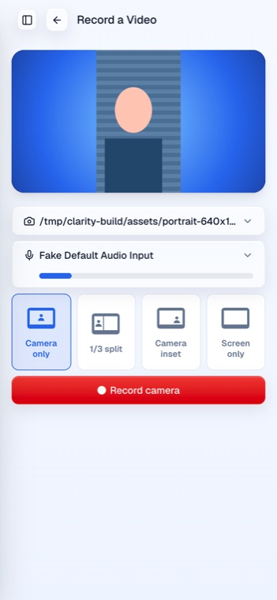
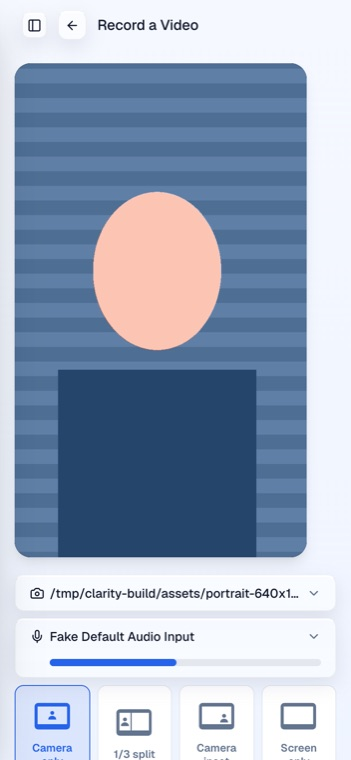
After, the three screen layouts dim and ignore taps for a camera take, and the camera switcher locks, because the recording is the camera's own feed.
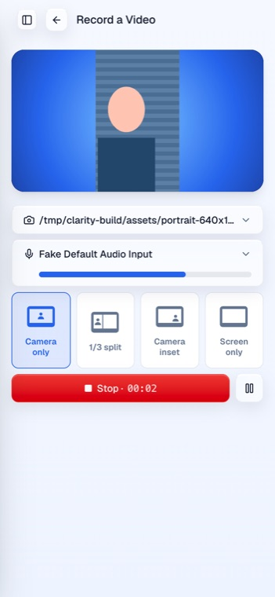
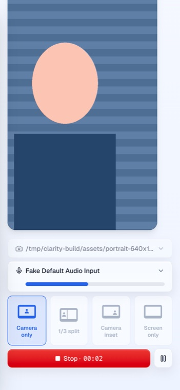
This is the fix to the original problem. Before, the file is 1920x1080 with the person in a strip and blue baked into the pixels. After, the file is the camera's own 640x1080 portrait frame.
Before: 1920x1080, edge pixel rgb(34,82,201) blue. After: 640x1080, edge pixel is camera content.
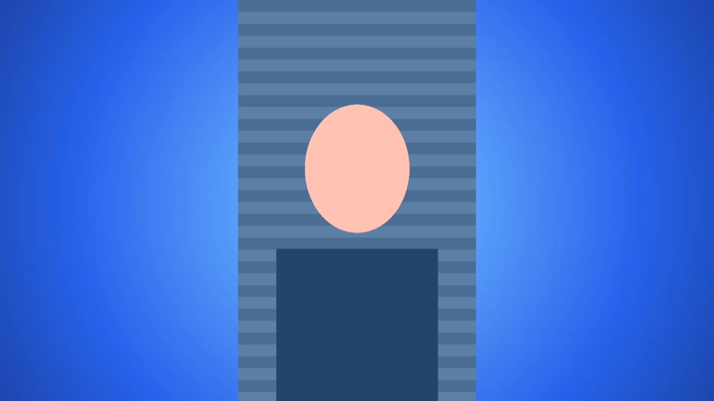
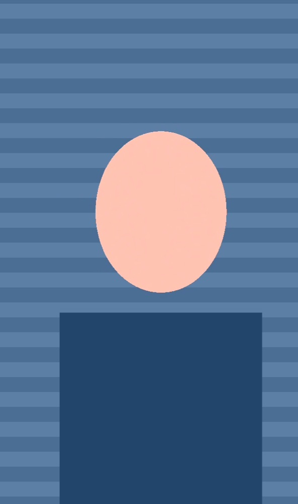
Before: frame ratio 16:9. After: frame ratio 0.59 (640/1080), portrait poster.
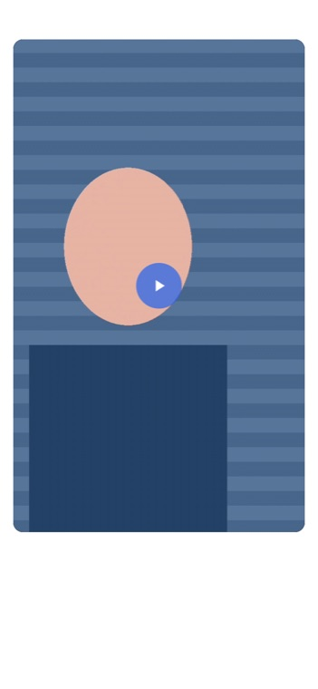
Before is exactly what you saw: a strip on blue. After, the whole portrait frame sits over a blurred copy of itself, and the grid keeps its shape.
Before: still 400x250 smartcrop of a frame that has blue in it. After: still 400x500 preserve, drawn twice.
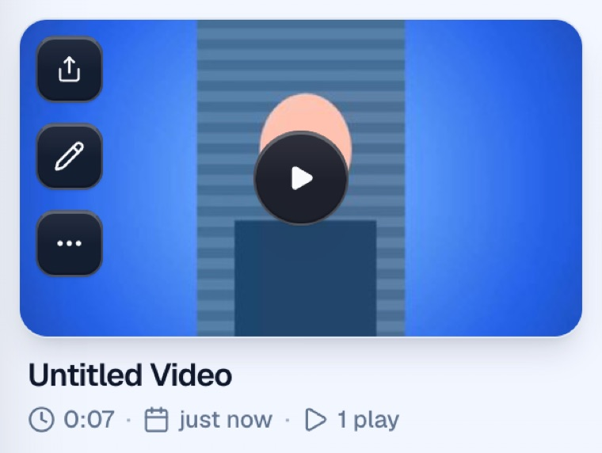
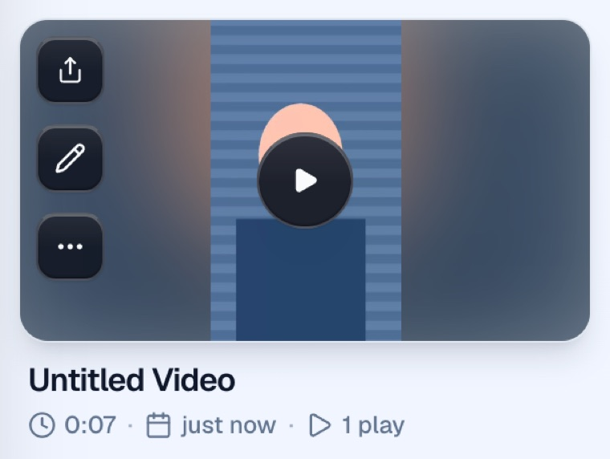
Desktop takes still combine camera and screen at record time for now. After, the space around a camera that doesn't fill the frame is the dark player background instead of blue.
Edge pixel before rgb(34,82,201), after rgb(2,5,23).
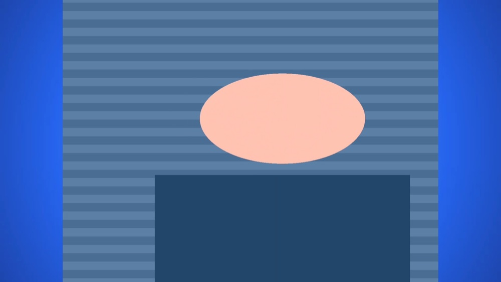
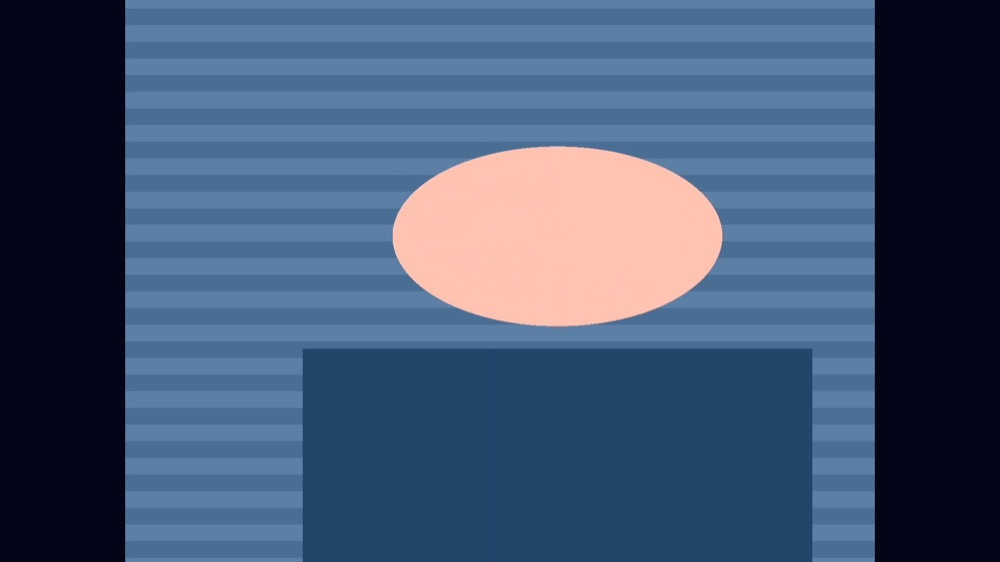
The square camera box becomes a round bubble. The green pattern is Chrome's fake screen share.
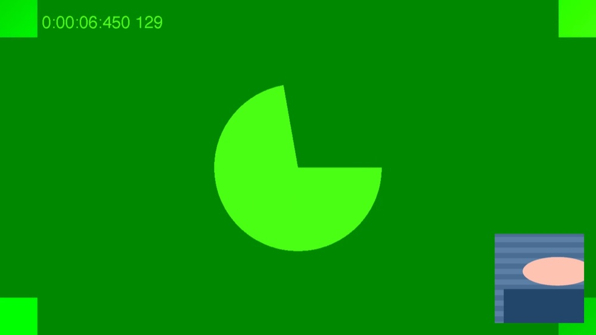
For uploads that were already portrait, the card used to crop the frame to fill a landscape box. After, it shows the whole frame.
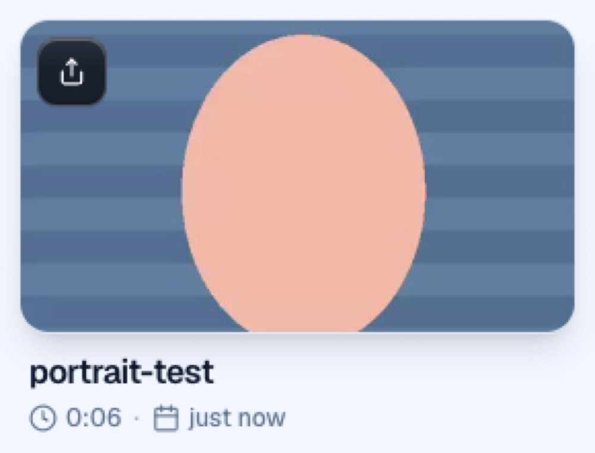
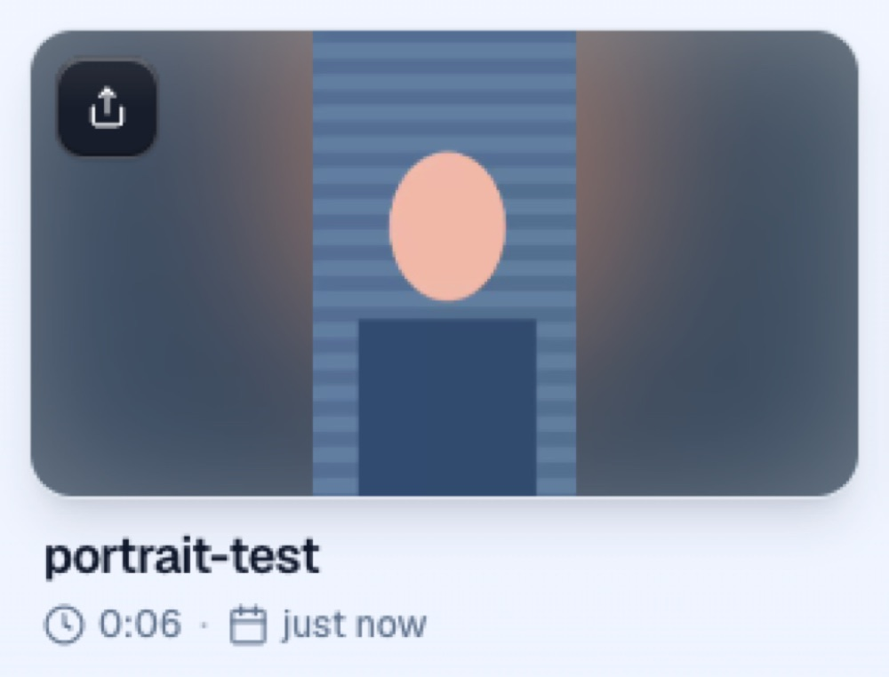
Before: cover, the top and bottom are cut off. After: contain over its own blur. Both playing at 540x960.
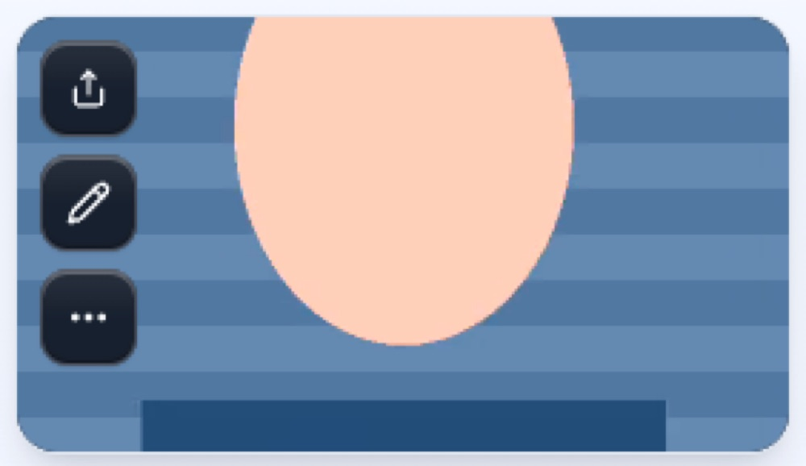
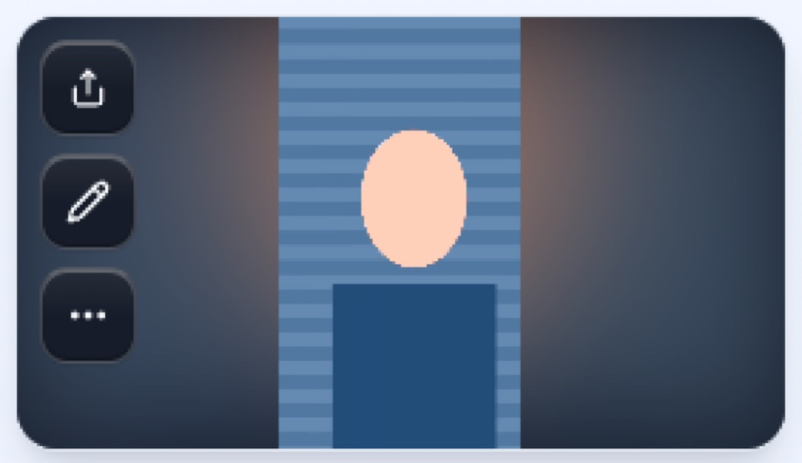
Before, every portrait frame was squashed sideways into a wide tile, so faces look like flat ovals. After, each frame is cropped to fill the tile at its real proportions.
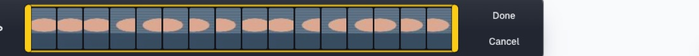
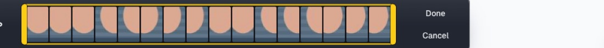
The after side ran on a throwaway preview (#1013) that combines the three PRs; the changes themselves merge through #982, #983 and #984. Next step after these: record camera and screen as separate sources and bake the layout afterwards (design).